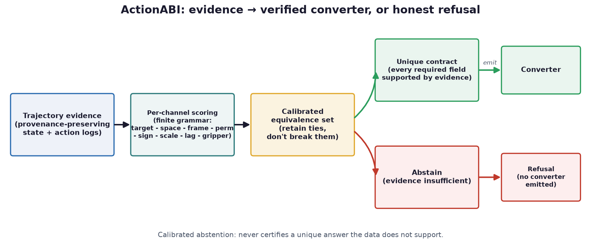
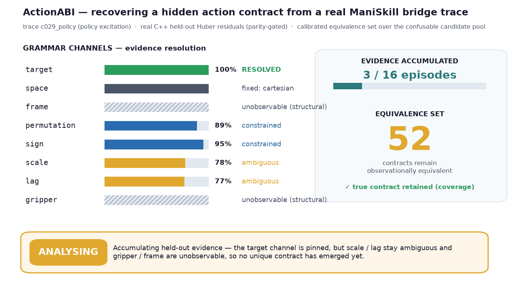
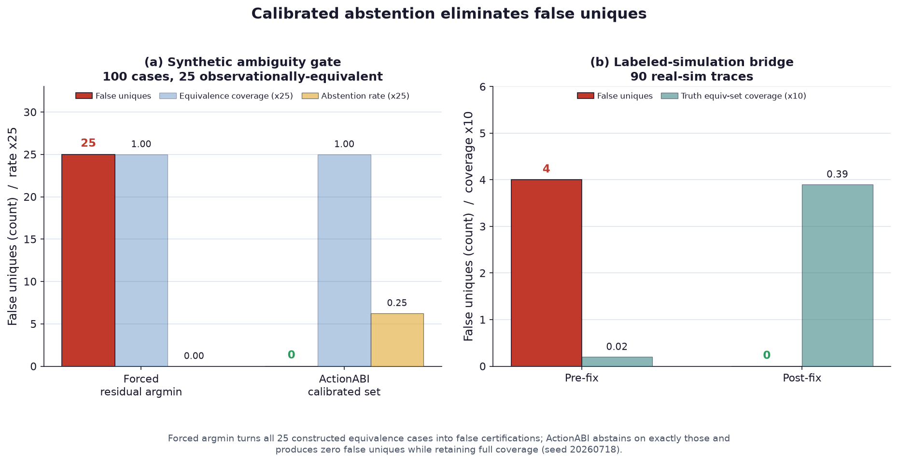
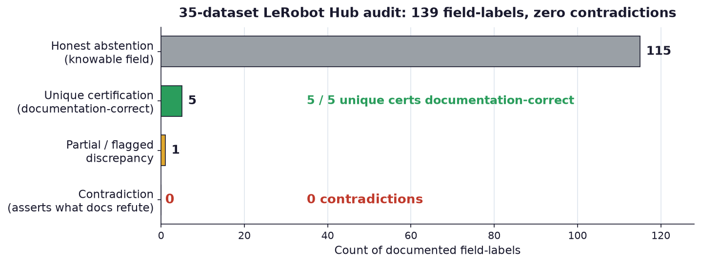
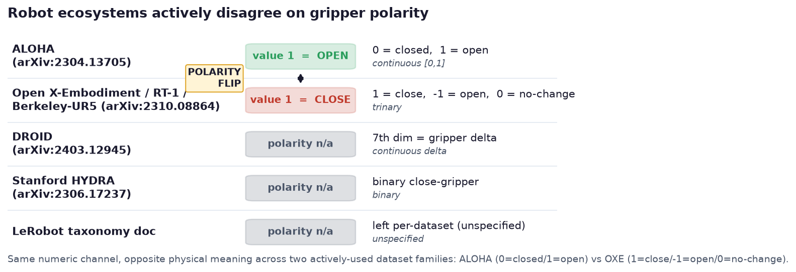

Recover undocumented robot action contracts from logged trajectories
ActionABI is an evidence-first C++20 audit tool for forensic recovery of undocumented robot action-tensor contracts. Given provenance-preserving trajectories and a finite set of candidate contracts, it scores candidates on held-out episodes, retains a calibrated equivalence set instead of breaking ties, proposes bounded separating probes, and emits a converter only when every required field is supported by an evidence report.
uvx --from cmake cmake -S . -B build -DACTIONABI_BUILD_TESTS=ON -DCMAKE_BUILD_TYPE=Release uvx --from cmake cmake --build build -j 8 uvx --from cmake ctest --test-dir build --output-on-failure ./build/actionabi --version ./build/actionabi infer \ --input tests/fixtures/simple.jsonl \ --contract tests/fixtures/absolute.json \ --contract tests/fixtures/delta.json \ --output build/evidence.json
01
Evidence
| Synthetic ambiguity gate (100 cases, 25 equivalent) | 0 false unique certifications vs 25 for forced argmin, at 1.00 equivalence coverage |
|---|---|
| Labeled-sim bridge (90 traces, 45 contracts) | 0 false uniques post-fix (4 pre-fix); truth coverage 0.02 → 0.39 |
| Supervised accuracy, post-fix (90 traces) | permutation 0.80, sign 0.84 (pre-fix 0.63 / 0.76); lag 0.66 |
| 35-dataset LeRobot Hub audit (139 labels) | 0 contradictions; 5/5 unique certifications documentation-correct |
| Frozen case-study matrix (6 pinned datasets) | 6/6 precommitted falsification gates reproduced; converters blocked on all |
| CUDA scaling (RTX 5090, transfer-inclusive) | best 1.87x vs the 5x gate — CUDA stays experimental |
02
Media




03
Install & verify
# Expected: 9/9 CTests and 42/42 Python experiment tests
uvx --from cmake cmake -S . -B build-clean -DACTIONABI_BUILD_TESTS=ON -DCMAKE_BUILD_TYPE=Release
uvx --from cmake cmake --build build-clean -j 8
uvx --from cmake ctest --test-dir build-clean --output-on-failure
python -m venv build-data-env
build-data-env/bin/pip install -r requirements-experiments.txt
build-data-env/bin/python -m unittest discover -s experiments -p 'test_*.py' -v
04
Limits
What this release does not claim (from the release notes):
- Not verified in this release (no GPU hardware): the optional CUDA parity path.